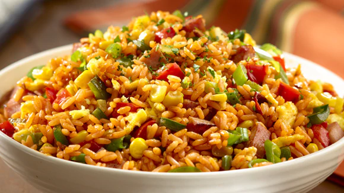

Arroz frito
01 de Abril del 2017
Calienta un wok a fuego alto y agrega 1 cucharadita de aceite de canola. Cocina los huevos en el aceite caliente, revolviendo durante 3 o 4 minutos. Pasa los huevos revueltos a un plato.
Agrega 1 cucharadita de aceite de canola, zanahorias y sal al sartén, y sofríe durante 2 minutos. Añade el ajo, y cocina, hasta que éste haya tomado un tono café claro. Incorpora los chícharos y la cebollita cambray, y cocina 1 o 2 minutos más. Baja el fuego a medio.
Heisen12: Mi familia quedó encantada con este arroz, busqué mucho tiempo la receta, gracias.
Mary94: Chicos, alguien puede ayudarme? El arroz siempre se esponja demasiado.
Helado Frito
02 de Marzo del 2017
Cortar la corteza del pan y hacer las bolas de helado con una cuchara para helado o con las manos, imediatamente cubrir las bolas de helado con dos rebanadas de pan y moldear de forma redonda, se envuelve en aluminio y congelar por 2 horas.
Preparar la harina para hot cakes, calentar aceite en un sartén hondo, suficiente para subrir la bola. Una vez congeladas las bolas, se desenvuelven del papel y se sumergen en harina para intriducirlos inmediatamente al aceite, 10 minutos.
Mony66: Esto les va a encantar a mis hijos.
Roberto_5: ¿Dónde puedo conseguir la salsa soya?
Chef_10 Como consejo, deberían dejar el arroz ya hecho, reposando y enfriando toda una noche.
Juan33: Excelente receta, quiero compartirlo con mis amigos.